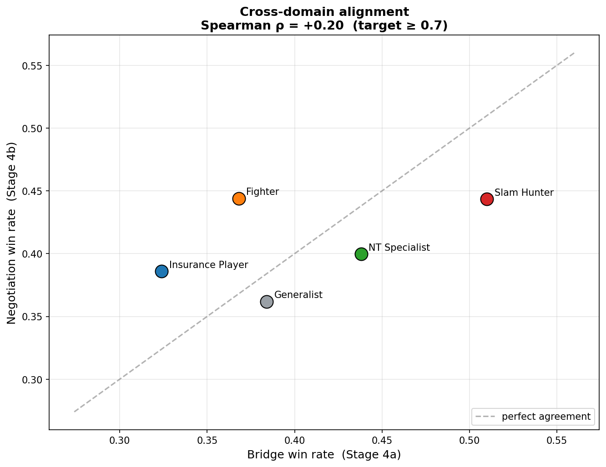
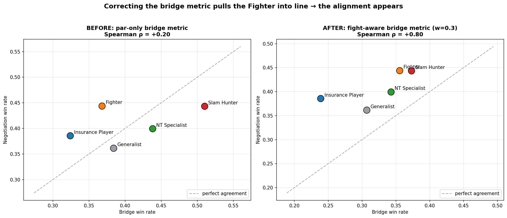
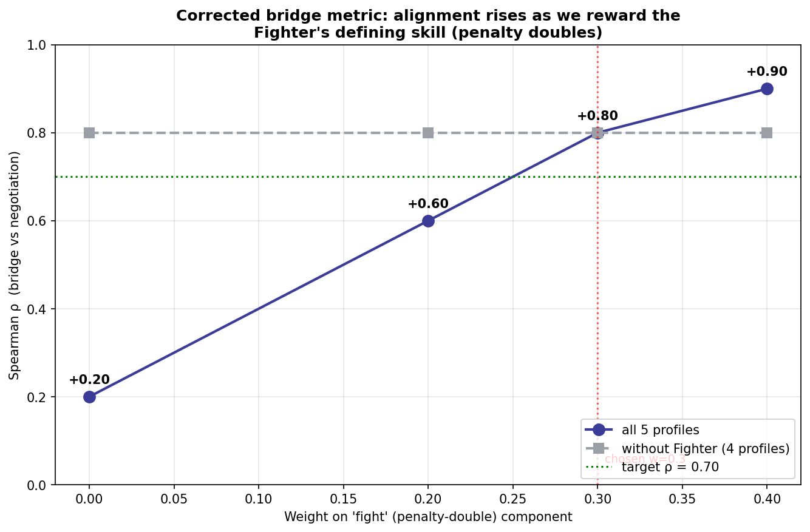

עמודה גולמית (raw column) היא פיסת נתון מוקלטת (כמו "מי ישב בצפון"). תכונה (feature) היא מספר המתאר את ההתנהגות של השחקן, מחושב מהעמודות הגולמיות. מרבית העמודות הגולמיות אינן תכונות — הן מזהים (IDs), שמות, או החומר הגולמי שממנו אנו מחשבים את התכונות.
לבסיס הנתונים הגולמי יש 48 עמודות. הן מתחלקות ל-4 קבוצות:
| קבוצה | דוגמאות לעמודות | האם זו תכונה? | למה |
|---|---|---|---|
| מזהים / מטא-נתונים | match_id, board, round, year, competition, category | ❌ לא | פשוט אומר לנו איזה משחק ומתי |
| שמות שחקנים | open_north, open_south, … closed_west (8 עמודות) | ❌ לא | פשוט אומר לנו מי ישב איפה |
| תיעוד משחק גולמי | contract, bidding, tricks, declarer, lead, ns_score, ew_score, 16 עמודות קלפים, dealer, vulnerability | ⚠️ לא באופן ישיר | אלה הם החומר הגולמי — אנו מחשבים תכונות מתוכם |
| דגלי איכות | has_bidding, has_cards | ❌ לא | פשוט אומר "האם המידע הזה זמין או לא" |
נקודת מפתח עבור המנחה: מתוך 48 עמודות גולמיות, התכונות מגיעות בעיקר מ-3 בלבד:
contract (מה הוכרז), bidding (איך הוכרז), ו-tricks (האם זה הצליח).
כל תכונה היא מספר אחד לכל שחקן, המתאר התנהגות אחת. בנינו 10, בשתי משפחות.
contract ("מה השחקן הכריז")| תכונה | משמעות פשוטה | דוגמה |
|---|---|---|
slam_rate | באיזו תדירות הם מכריזים על חוזה ענק (רמה 6–7) | 0.10 = מכריז סלאם ב-10% מהזמן |
nt_rate | באיזו תדירות הם משחקים ללא שליט (NoTrump) | 0.38 = 38% מהחוזים הם NT |
partscore_rate | באיזו תדירות הם עוצרים נמוך/בטוח (רמה 1–3) | 0.68 = עוצר נמוך ב-68% מהזמן |
game_rate | באיזו תדירות הם מכריזים בדיוק על רמת משחק (game level) | — |
double_rate | באיזו תדירות החוזה שלהם קיבל דאבל (כפיל) | — |
bidding ("איך השחקן הכריז")| תכונה | משמעות פשוטה |
|---|---|
opening_rate | באיזו תדירות הם פותחים את המכרז |
preempt_rate | באיזו תדירות הם פותחים גבוה (רמה 2+) — אגרסיבי |
intervention_rate | באיזו תדירות הם מתערבים במכרז של היריבים |
penalty_double_rate | באיזו תדירות הם עושים דאבל ליריבים — סופר את כל הדאבלים (הזמנה וגם עונשין); מדד לתחרותיות אגרסיבית (השם מעט מטעה) |
avg_bids_per_board | כמה הכרזות (calls) הם מבצעים בכל חלוקה |
השמטנו 2 תכונות מכיוון שהן היו כמעט זהות עבור כולם (הן אינן מפרידות בין שחקנים — "שונות נמוכה"):
avg_level (כולם ממוצעים סביב ~3.3)avg_bids_per_boardאז 8 תכונות שימשו — תחילה ניסינו את K-Means (שנכשל), ואז את שיטת האחוזון-הקיצון שבאמת עבדה (ראו סעיפים 4 ו-7).
slam_rate, nt_rate, …). הם "בלתי תלויים" כי הם ניתנים למודל כמו שהם.| משתנה | תפקיד | |
|---|---|---|
| x (בלתי תלוי) | 8 תכונות ההתנהגות | מה שאנחנו מכניסים פנימה |
| y (תלוי) | פרופיל השחקן | מה שיוצא החוצה |
אנלוגיה פשוטה: x = ציוני המבחנים של תלמיד בכל מקצוע; y = "איזה סוג תלמיד הוא" (מדעי? אמנותי?). הסוג תלוי בציונים.
כל הדוקטורט הוא שני צעדי y = f(x) משורשרים יחד.
במילים: "מתוך איך שאתה מכריז, אנחנו מבינים איזה סוג מקבל-החלטות אתה."
במילים: "סגנון ההחלטה שלמדנו מברידג' מנבא איך אותו 'אדם' מתנהג במשא ומתן עסקי."
אנו בודקים את רמה 2 ע"י בדיקה האם דירוג הפרופילים זהה בשני התחומים, באמצעות Spearman ρ (מתאם של דירוגים). יעד: ρ ≥ 0.70.
הבעיה בעסקים: נתוני משא ומתן אמיתיים הם סודיים ולא נמדדים — אי אפשר לאמן מודל עליהם. ברידג' הוא מעבדה נקייה לאותן החלטות (מתי לקחת סיכון, מתי לעצור, מתי ללחוץ על הצד השני), עם 149,000 תוצאות מדידות משחקני עילית.
| מה ה-y מאפשר | דוגמה עסקית |
|---|---|
| לזהות את הסגנון של השותף למשא ומתן | "המנהל הזה מתנהג כמו צייד סלאמים ← צפה להצעות נועזות, הכן הגנה" |
| לנבא את המהלכים שלהם | "שחקן ביטוח סוגר עסקאות מהר ← אנחנו יכולים ללחוץ למחיר טוב יותר" |
| לאמן מנהלים בצורה בטוחה | "תרגל מול 5 סוגי מנהלים — אין צורך ביריב אמיתי" |
משפט אחד: ברידג' הוא מגרש אימונים מדיד ללמידה וניבוי של סגנונות משא ומתן, בלי צורך בנתונים עסקיים פרטיים.
bidding לוכדות את התהליך.penalty_double_rate סופר גם דאבל הזמנה וגם עונשין (לא רק עונשין). זה מדד תקף לתחרותיות, אך הפרדה בין הסוגים היא שיפור עתידי.notebooks/visualize_clustering_failure.py — שום דבר לא הוקלד ביד.
8 ההתנהגויות שאנו מודדים לכל שחקן, ממוינות לפי כמה הן מפרידות בין השחקנים (מקדם השונות = פיזור ÷ ממוצע). עמודה גבוהה = השחקנים נבדלים הרבה בהתנהגות זו. 8 המספרים האלה הם הדבר היחיד שהמודל רואה על כל שחקן.

הרצנו K-Means בבקשה ל-2–6 קבוצות. הקו האדום הוא ציון הסילואט — כמה נקיות ומופרדות הקבוצות:
כל k מגיע לשיא של 0.24 בלבד — רחוק מ-0.5. שחקני העילית יוצרים ענן חלק אחד (רצף), ולא איים נפרדים.

ארבעה תרשימים, אחד לכל פרופיל. אפור = כלל האוכלוסייה; צבע = חברי הפרופיל; קו מקווקו = סף ה-10% העליונים. במקום לכפות קבוצות מזויפות, אנחנו מנקדים את הזנבות הקיצוניים:
slam_ratepartscore_ratepenalty_double_rate (דאבלים תוקפניים)nt_rate| תת-שלב | מה עשינו | המדד |
|---|---|---|
| 4a — ברידג' | 5 הפרופילים הכריזו על 50 ידיים זהות | קרבה ל"חוזה הנכון" לפי כוח היד |
| 4b — משא ומתן | 5 הפרופילים ניהלו 4 עסקאות מול "מוכר" קשוח קבוע | כמה הורידו את המחיר |
| 4c — היישור | השוואת הדירוג בשני התחומים | Spearman ρ |

במדידה הראשונה היישור יצא חלש. הסיבה הייתה חריג אחד — ה-Fighter: הוא יצא חלש בברידג' אבל הכי טוב במשא ומתן, וזה "שבר" את הקשר.
למה? הכישור המגדיר של ה-Fighter הוא דאבלים תוקפניים — הוא עשה דאבל ב-33% מהכרזותיו, פי 6–8 מכל פרופיל אחר! אבל מדד הברידג' שלנו (שמדד רק "גובה חוזה") היה עיוור לדאבלים. אז הוא נראה חלש בברידג' למרות שהוא לוחם מצוין. מומחה הברידג' חזה את זה מראש.
penalty_double_rate סופרת בפועל את כל הדאבלים — גם דאבל הזמנה (takeout)
וגם דאבל עונשין — לא רק עונשין. שני הסוגים הם בחירה להיכנס ולהילחם במכרז במקום לפסוח, ולכן זה
מדד תקף לתחרותיות אגרסיבית. השם המדויק יותר הוא "דאבלר תוקפני", לא "מעניש".
זה לא משנה את המספרים ולא את ρ — רק את הפרשנות המילולית.
בנינו מדד ברידג' משולב שמתגמל גם דיוק בהכרזה וגם לחימה (דאבלים):
ציון = 0.7 × דיוק_חוזה + 0.3 × שיעור_דאבלים. וה-ρ קפץ ל-0.80 — מעל היעד!
השוואה לפני/אחרי (אותה תמונה בדיוק, רק עם המדד המתוקן):

תראו את ה-Fighter (כתום): לפני הוא חריג גבוה-משמאל (מקום 4 בברידג'); אחרי הוא זז ימינה למקום 2, וכל הנקודות מתיישרות על הקו האלכסוני.
וגם ניתוח רגישות — כדי להראות שזה לא תלוי במשקל בודד:

ככל שנותנים יותר משקל ללחימה, ה-ρ עולה (0.20 → 0.60 → 0.80 → 0.90). בחרנו משקל מתון (0.3), לא את המקסימלי — כדי שזה לא ייראה כמו "תפירה" לתוצאה.
זהו proof-of-concept מוצלח: היסוד (זיהוי הפרופילים, H1) חזק ומובהק (Cohen's d 2.1–4.6). שלב 4 (H3) הראה שהקשר קיים (ρ=0.80) אך מתחבא מאחורי בעיית מדידה ממוקדת שזיהינו והבנו. כיווני העבודה לדוקטורט: מדד ברידג' עשיר יותר (או מנוע double-dummy אמיתי), הפרדת דאבל הזמנה מעונשין, יותר פרופילים, ותרחישי משא ומתן אמיתיים.